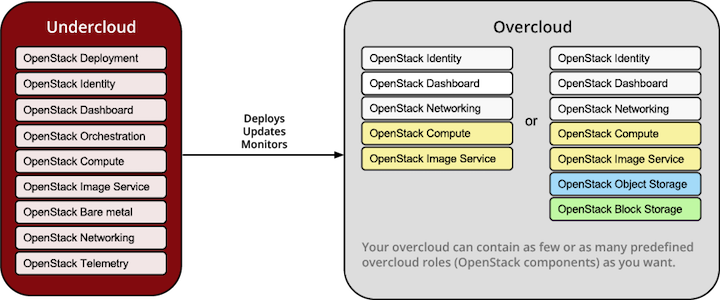
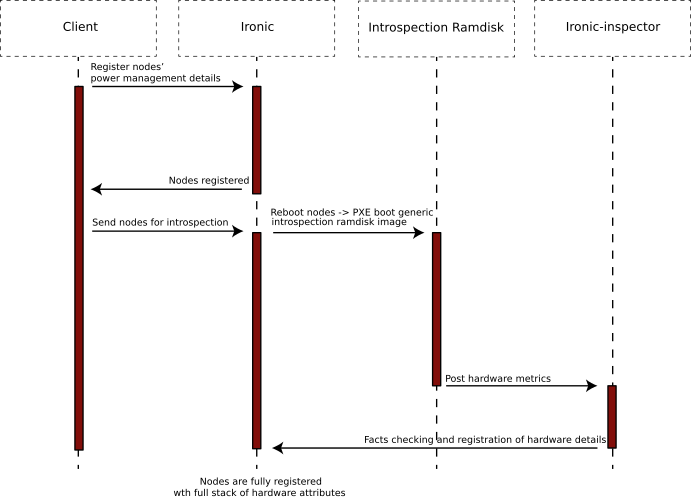

TripleO Architecture¶
This document lists the main components of TripleO, and gives some description of how each component is used. There are links to additional sources of information throughout the document.
Contents
Architecture Overview¶
TripleO is a community developed approach and set of tools for deploying, and managing an OpenStack cloud.
TripleO¶
TripleO is the friendly name for “OpenStack on OpenStack”. It is an official OpenStack project with the goal of allowing you to deploy and manage a production cloud onto bare metal hardware using a subset of existing OpenStack components.

With TripleO, you start by creating an “undercloud” (a deployment cloud) that will contain the necessary OpenStack components to deploy and manage an “overcloud” (a workload cloud). The overcloud is the deployed solution and can represent a cloud for any purpose (e.g. production, staging, test, etc).
TripleO leverages several existing core components of OpenStack including Nova, Ironic, Neutron, Heat, Glance and Ceilometer to deploy OpenStack on baremetal hardware. Nova and Ironic are used in the undercloud to manage baremetal instances that comprise the infrastructure for the overcloud. Neutron is utilized to provide a networking environment in which to deploy the overcloud, machine images are stored in Glance, and Ceilometer collects metrics about your overcloud.
The following diagram illustrates a physical view of how the undercloud may be hosted on one physical server and the overcloud distributed across many physical servers.

SpinalStack’s Inspiration¶
Some key aspects of SpinalStack workflow have been incorporated into TripleO, providing options to perform introspection, benchmarking and role matching of your hardware prior to deploying OpenStack.
Hardware introspection features enable you to collect data about the properties of your hardware prior to deployment, such that specific classes of hardware may be matched to specific roles (e.g a special hardware configuration for Compute or Storage roles). There is also the option to enable performance benchmarking during this phase, such that outliers which do not match the expected performance profile may be excluded from the deployment.
TripleO also configures servers in a similar way to SpinalStack, using stable community puppet implementations, applied in a series of steps, such that granular control and validation of the deployment is possible
Benefits¶
Using TripleO‘s combination of OpenStack components, and their APIs, as the infrastructure to deploy and operate OpenStack itself delivers several benefits:
- TripleO‘s APIs are the OpenStack APIs. They’re well maintained, well documented, and come with client libraries and command line tools. Users who invest time in learning about TripleO‘s APIs are also learning about OpenStack itself, and users who are already familiar with OpenStack will find a great deal in TripleO that they already understand.
- Using the OpenStack components allows more rapid feature development of TripleO than might otherwise be the case; TripleO automatically inherits all the new features which are added to Glance, Heat etc., even when the developer of the new feature didn’t explicitly have TripleO in mind.
- The same applies to bug fixes and security updates. When OpenStack developers fix bugs in the common components, those fixes are inherited by TripleO.
- Users’ can invest time in integrating their own scripts and utilities with TripleO‘s APIs with some confidence. Those APIs are cooperatively maintained and developed by the OpenStack community. They’re not at risk of being suddenly changed or retired by a single controlling vendor.
- For developers, tight integration with the OpenStack APIs provides a solid architecture, which has gone through extensive community review.
It should be noted that not everything in TripleO is a reused OpenStack element.
Deployment Workflow Overview¶
- Environment Preparation
- Prepare your environment (baremetal or virtual)
- Install undercloud
- Undercloud Data Preparation
- Create images to establish the overcloud
- Register hardware nodes with undercloud
- Introspect hardware
- Create flavors (node profiles)
- Deployment Planning
- Configure overcloud roles
- Assign flavor (node profile to match desired hardware specs)
- Assign image (provisioning image)
- Size the role (how many instances to deploy)
- Configure service parameters
- Create a Heat template describing the overcloud (auto-generated from above)
- Configure overcloud roles
- Deployment
- Use Heat to deploy your template
- Heat will use Nova to identify and reserve the appropriate nodes
- Nova will use Ironic to startup nodes and install the correct images
- Per-node Setup
- When each node of the overcloud starts it will gather its configuration metadata from Heat Template configuration files
- Hiera files are distributed across all nodes and Heat applies puppet manifests to configure the services on the nodes
- Puppet runs in multiple steps, so that after each step there can be test triggered to check progress of the deployment and allow easier debugging.
- Overcloud Initialization
- Services on nodes of the overcloud are registered with Keystone
Deployment Workflow Detail¶
Environment Preparation¶
In the first place, you need to check that your environment is ready. TripleO can deploy OpenStack into baremetal as well as virtual environments. You need to make sure that your environment satisfies minimum requirements for given environment type and that networking is correctly set up.
Next step is to install the undercloud. We install undercloud using Instack‘s script and it calls puppet scripts in the background. Upstream TripleO developers also use the developer-based steps known as devtest.
Undercloud Data Preparation¶
Images¶
Before deploying the overcloud, you must first download or build images which will be installed on each of the nodes of the overcloud. TripleO uses diskimage-builder for building these so called “Golden Images”. The diskimage-builder tool takes a base image e.g. CentOS 7 and then layers additional software via configuration scripts (called elements) on top of that. The final result is a qcow2 formatted image with software installed but not configured.
While the diskimage-builder repository provides operating-system specific elements, ones specific to OpenStack, e.g. nova-api, are found in tripleo-image-elements. You can add different elements to an image to provide specific applications and services. Once all the images required to deploy the overcloud are built, they are stored in Glance running on the undercloud.
Nodes¶
Deploying the overcloud requires suitable hardware. The first task is to register the available hardware with Ironic, OpenStack’s equivalent of a hypervisor for managing baremetal servers. User can define the hardware attributes (such as number of CPUs, RAM, disk) manually or he can leave the fields out and run introspection of the nodes afterwards.
The sequence of events is pictured below:
- The user, via the command-line tools, or through direct API calls, registers the power management credentials for a node with Ironic.
- The user then instructs Ironic to reboot the node.
- Because the node is new, and not already fully registered, there are no specific PXE-boot instructions for it. In that case, the default action is to boot into an introspection ramdisk
- The introspection ramdisk probes the hardware on the node and gathers facts, including the number of CPU cores, the local disk size and the amount of RAM.
- The ramdisk posts the facts to the ironic-inspector API.
- All facts are passed and stored in the Ironic database.
- There can be performed advanced role matching via the ‘’ahc-match’’ tool, which simply adds an additional role categorization to Ironic based on introspected node facts and specified conditions.
Flavors¶
When users are creating virtual machines (VMs) in an OpenStack cloud, the flavor that they choose specifies the capacity of the VM which should be created. The flavor defines the CPU count, the amount of RAM, the amount of disk space etc. As long as the cloud has enough capacity to grant the user’s wish, and the user hasn’t reached their quota limit, the flavor acts as a set of instructions on exactly what kind of VM to create on the user’s behalf.
In the undercloud, where the machines are usually physical rather than virtual (or, at least, pre-existing, rather than created on demand), flavors have a slightly different effect. Essentially, they act as a constraint. Of all of the introspected hardware, only nodes which match a specified flavor are suitable for a particular role. This can be used to ensure that the large machines with a great deal of RAM and CPU capacity are used to run Nova in the overcloud, and the smaller machines run less demanding services, such as Keystone.
The version of TripleO included in TripleO is capable of handling flavors in two different modes.
The simpler PoC (Proof of Concept) mode is intended to enable new users to experiment, without worrying about matching hardware profiles. In this mode, there’s one single, global flavor, and any hardware can match it. That effectively removes flavor matching. Users can use whatever hardware they wish.
For the second mode, named Scale because it is suited to larger scale overcloud deployments, flavor matching is in full effect. A node will only be considered suitable for a given role if the role is associated with a flavor which matches the capacity of the node. Nodes without a matching flavor are effectively unusable.
This second mode allows users to ensure that their different hardware types end up running their intended role, though requires either manual node tagging or using introspection rules to tag nodes (see Advanced Profile Matching).
Deployment Planning¶
Whole part of planning your deployment is based on concept of overcloud roles. A role brings together following things:
- An image; the software to be installed on a node
- A flavor; the size of node suited to the role
- A size; number of instances which should be deployed having given role
- A set of heat templates; instructions on how to configure the node for its task
In the case of the “Compute” role:
- the image must contain all the required software to boot an OS and then run the KVM hypervisor and the Nova compute service
- the flavor (at least for a deployment which isn’t a simple proof of concept), should specify that the machine has enough CPU capacity and RAM to host several VMs concurrently
- the Heat templates will take care of ensuring that the Nova service is correctly configured on each node when it first boots.
Currently, the roles in TripleO are very prescriptive, and in particular individual services cannot easily be scaled independently of the Controller role (other than storage nodes). More flexibility in this regard is planned in a future release.
Customizable things during deployment planning are:
- Number of nodes for each role
- Service parameters configuration
- Network configuration (NIC configuration options, isolated vs. single overlay)
- Ceph rbd backend options and defaults
- Ways to pass in extra configuration, e.g site-specific customizations
Deployment¶
Deployment to physical servers happens through a collaboration of Heat, Nova, Neutron, Glance and Ironic.
The Heat templates and environments are served to Heat which will orchestrate the whole deployment and it will create a stack. Stack is Heat’s own term for the applications that it creates. The overcloud, in Heat terms, is a particularly complex instance of a stack.
In order for the stack to be deployed, Heat makes successive calls to Nova, OpenStack’s compute service controller. Nova depends upon Ironic, which, as described above has acquired an inventory of introspected hardware by this stage in the process.
At this point, Nova flavors may act as a constraint, influencing the range of machines which may be picked for deployment by the Nova scheduler. For each request to deploy a new node with a specific role, Nova filters the list of available nodes, ensuring that the selected nodes meet the hardware requirements.
Once the target node has been selected, Ironic does the actual provisioning of the node, Ironic retrieves the OS image associated with the role from Glance, causes the node to boot a deployment ramdisk and then, in the typical case, exports the node’s local disk over iSCSI so that the disk can be partitioned and the have the OS image written onto it by the Ironic Conductor.
See Ironic’s Understanding Baremetal Deployment for further details.
Per-node Setup¶
TBD - Puppet
Overcloud Initialization¶
After the overcloud has been deployed, the initialization of OpenStack services (e.g Keystone, Neutron, etc) needs to occur. That is accomplished today by scripts in the tripleo-incubator source repository and it uses bits from os-cloud-config which contains common code, the seed initialization logic, and the post heat completion initial configuration of a cloud. There are three primary steps to completing the initialization:
- Initializing Identity Services (Keystone)
- Registering service endpoints (e.g. Glance, Nova)
- Specify a block of IP addresses for overcloud instances (Neutron)
The first step initializes Keystone for use with normal authentication by creating the admin and service tenants, the admin and Member roles, the admin user, configure certificates and finally registers the initial identity endpoint. The next step registers image, orchestration, network and compute services running on the default ports on the control plane node. Finally, Neutron is given a starting IP address, ending IP address, and a CIDR notation to represent the subnet for the block of floating IP addresses that will be used within the overcloud.
High Availability (HA)¶
TripleO will use Pacemaker to achieve high-availability.
Reference architecture document: https://github.com/beekhof/osp-ha-deploy
Note
Current HA solution is being developed by our community.
Managing the Deployment¶
After the overcloud deployment is completed, it will be possible to monitor, scale it out or perform basic maintenance operations via the CLI.
Monitoring the Overcloud¶
When the overcloud is deployed, Ceilometer can be configured to track a set of OS metrics for each node (system load, CPU utilization, swap usage etc.)
Additionally, Ironic exports IPMI metrics for nodes, which can also be stored in Ceilometer. This enables checks on hardware state such as fan operation/failure and internal chassis temperatures.
The metrics which Ceilometer gathers can be queried for Ceilometer’s REST API, or by using the command line client.
Note
There are plans to add more operational tooling to the future release.
Scaling-out the Overcloud¶
The process of scaling out the overcloud by adding new nodes involves these stages:
- Making sure you have enough nodes to deploy on (or register new nodes as described in the “Undercloud Data Preparation” section above).
- Calling Heat to update the stack which will apply the set of changes to the overcloud.